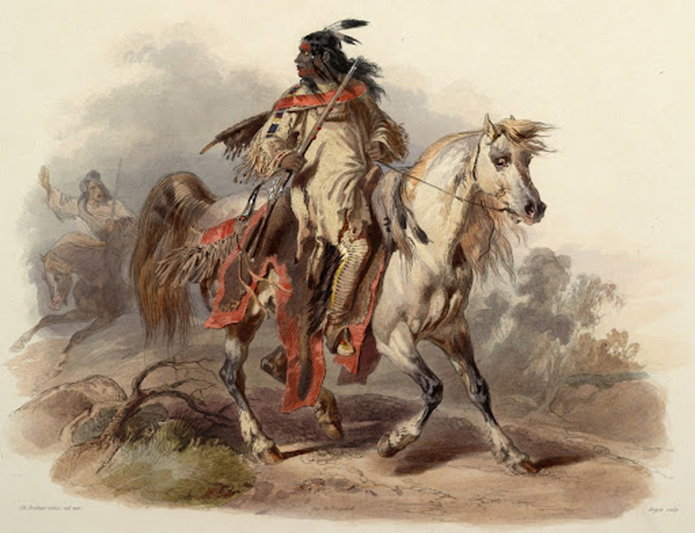
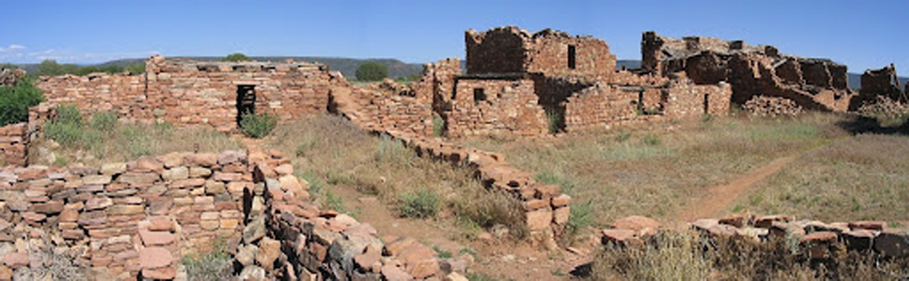

What You Should Know
By the end of this lesson, you should be able to:
Be able to locate the "New World" on a map
Be able to identify Ancient Rome
| LESSON EXPECTATIONS |
LESSON KEYWORDS |
|---|---|
|
By the end of this lesson, you should be able to: Identify how and when the first Native Americans arrived in America Apply the order of operations to evaluate expressions Compare the Native American views on land ownership with those of Europeans Describe the role of kinship networks such as tribes, clans and families on the welfare of individuals and trade between groups Identify factors that contributed to the downfall of the native societies upon the arrival of the Europeans |
Bering Land Bridge/Bering Strait CE Kinship networks Mesoamerican Pre-Columbian |
DATING AND THE CALENDAR
View of the Bering Strait located just to the south of the Arctic Circle at the northern edges of the Bering Sea.
There have been many different calendars kept by many different groups throughout history. One of the oldest is the Hebrew calendar, which dates back over 5,000 years. The Mayans, whom you will read about here, also had a calendar. It began about 600 years before ours and mysteriously ends in our year 2012. Perhaps you have seen television programs in which people refer to this. Did these ancient people have some insight into the future?
The Europeans ignored the Native American's dating system. As a result, the calendar we use was adapted from the earlier European Christian calendar. Since Europeans, who were Christians, dated events with the life of Jesus, dates were referred to as AD or BC. These are from Latin abbreviations for after or before the birth of Jesus. It is interesting to note that modern historians have discovered more accurately when the birth of Christ was and so our calendars today are approximately five years short of what the actual year should be.
Representation of the Mayan Calendar.
Today, in recognition that most of the world is not Christian, historians use the term "Common Era." As a result, you will see dates as "CE" meaning in the Common Era (We are now in the 21st Century CE) or "BCE" meaning Before the Common Era.
This can be confusing if you are used to BC and AD. BCE is equivalent to BC and CE is equivalent to AD. To know how long ago an event marked BCE was, you would add that to the CE date you are looking back from. For example, if the Aztecs moved into the Andes Mountains around 1300 BCE and the Spanish conquered them around 1520 CE, we could say that they lived independently in the Andes for about 2,820 years before being conquered by the Spanish. (Add the BCE and CE years together; history sometimes moves slowly.)
Head representation of an aztec warrior
Note that most of the events in these lessons will be after CE and are sometimes referred to by the century in which they occurred. A century is 100 years. The name of a century refers to how many there have been since the year "1" CE.
Remember there is no ZERO year between 1 BCE and 1 CE as you would find in mathematics when dealing with positive and negative numbers. The calendar goes from 1 BCE to 1 CE, skipping zero totally. Since the first 100 years CE were the “First Century” we would call years such as 55 CE or 98 CE part of the 1st Century. Years after 99 CE are part of the second century. Someone born in 1929 or 1989 would have been born in the 20th Century.”
What century do we live in today?
For centuries, archaeologists, anthropologists, and historians have debated when humans crossed from Asia into North America. Some scientists suggest that the Americas were settled by people arriving by sea from Asia and southwestern Europe as long as 18,000 to 40,000 years ago. Other scientists and researchers ascribe to the Bering Land Bridge theory and place the timetable for migration from Asia to North America at about 13,000 to 15,000 years ago. It is the land bridge theory that most researchers believe accounts for the migration into North and South America.
Old Map Of the American Continent
The theory of a land bridge existing between the Eastern and Western hemispheres that connected Asia and North America first surfaced in the late 1500s. Over the centuries, scientists argued over the validity of that theory, and it wasn’t until the early 20th Century that there was finally widespread agreement that the Bering Land Bridge did in fact exist. During the last Ice Age that occurred 15,000-18,000 years ago, vast amounts of the Earth’s water froze, lowering the level of oceans and exposing land that was long hidden beneath the waters of the Bering Sea. This vast land mass, sometimes referred to as Beringia, formed a land bridge that spanned the area between eastern Siberia and Alaska, allowing people and animals to migrate from the easternmost parts of Siberia into what is now northwestern Alaska.
The current theory is that this migration took place over a great deal of time, and that the people may have lived on the land bridge for centuries. That supposition is supported by the fact that core samples of the land now under the sea confirm the presence of shrubs and insects that are present in modern Alaska. However, as the Earth’s temperature began to rise, and with it the level of the oceans, both humans and animals once again began to migrate further to the east into North America, traveling down from Alaska, south through western North America into Central and South America.
Scientific study confirms genetic links between those who lived in Siberia some 30,000 years ago and inhabitants of northwestern Alaska, as well as some Native American tribes that inhabit the lands of North and South America. Examination of mitochondrial DNA from Native Americans compared with the genetic material obtained from the remains of ancient populations in Siberia demonstrates that at least some of the Native American tribes found in the North and South American Native tribes are indeed descendants of people who lived in Siberia more than 30,000 years ago.
The discovery of spear points in Clovis, New Mexico, also supports the notion of a southern migration dating back some 13,500 years. Carbon dating places those artifacts in the timeframe supporting the land bridge theory and migration timeline. Subsequent findings of similar artifacts in other southwestern United States add additional support for the land bridge theory.
As these bands migrated throughout the Americas, they began to adapt to the environment in which they lived. Many initially subsisted as hunter-gatherers, but as they reached more hospitable climates, they adapted and took advantage of the resources available to them.
Temperate climates allowed them to grow and harvest food, eliminating the need to move continually in response to climate and availability of food. Permanent farming villages were established in the Mexican highlands by 2000-1500 BCE. This stable lifestyle helped cultivate intricate patterns of civilization by advancing artistic culture, craft-making and social order. These permanent settlements also resulted in warfare between competing villages, particularly among the group that would come to be known as the Mayas. They were known to enslave others and practice cannibalism. As they developed, however, the Mayan civilization became extremely complex and advanced.
Tikal Mayan ruins
Massive city centers were developed by the Maya tribe in the Mesoamerican region after 300 CE and collapsed about 600 years later, primarily because of continuing civil wars within the tribe. The area was taken over by a mysterious group, one we know as the Toltecs, who themselves disappeared around 1200 CE. Subsequently, the Aztecs traveled south and populated the area in 1325 CE. At the time of the Spanish invasion of 1519, the Aztec empire may have encompassed anywhere between 5 and 20 million people under the rule of Montezuma II. Further south, the Quechuas, or Incas, built an empire of similar proportions, inhabiting a string of land along the Andes from Ecuador to Chile.
Aztec Calendar
North American Native tribes practiced many of the same beliefs as their South American counterparts, but their tribal units were generally much smaller than the complex societies established in South America. These North American tribes were also war-like, but they were not as cohesive a society as the Maya or the Aztecs. They tended to congregate in smaller units, each with its own structure and language. These North American Native tribes numbered in the hundreds, and while they exhibited many of the same types of behaviors and beliefs, they were quite distinct in their tribal identities.
Close up of a Mayan Palace in Yucatán, México
The Mayans lived in the jungles of Central America. Many of their ruins can still be found in Guatemala, Belize and Mexico. They were a highly advanced civilization, and built huge cities, pyramids and public buildings. They had great architectural, mathematical and scientific skills including a great knowledge of astronomy. The early Europeans, unable to believe that non-Europeans could produce such amazing structures, mistakenly believed they must have been built by ancient Egyptians or Greeks.
View of Teotihuacán, México
The Spanish conquistador, Cortés, found the Aztecs and their huge city of Tenochtitlan, located on a lake near what is now Mexico City.
Machu Pichu ruins, Perú.
During the 15th and 16th centuries, the Incas built an advanced society high in the Andes Mountains of present day Peru. They, too, were conquered by Spanish explorers who wanted their gold.
The natives in North America (particularly modern day United States) were not as plentiful or as technologically advanced as their Middle and South American counterparts. Archaeologists have been able to single out three important high points in the Native American culture of the region: the Adena-Hopewell culture (800 BCE – 600 CE), the Mississippian culture (600 CE – 1500), and the Pueblo-Hohokam culture (400 BCE – present).
North American Native riding a horse
These large cultural groups were good at adapting to an ever-changing environment due to their creation of Kinship networks. In other words, the individual was able to look to the extended family, clan or tribe for assistance with medical care, education, and other areas that we today often refer to as social services.
These gigantic family networks remained united through religious, political and social ceremonies. These became basic obligations because many believed if members of the family did not attend, they risked bringing diseases and other misfortunes on the entire family.
Native American family and tribal groups frequently traded with other groups. Trading was often viewed as a sign of hospitality, so trade was viewed as a respectable social custom. Many groups openly gave away their possessions. Land, however, was not viewed as a possession but as a commodity shared by everyone in the group.
Kinishba Ruins in eastern Arizona
The right to use land could be permitted easily, but the thought that someone could own land or buy or sell it was completely unknown. This would become a point of conflict between the Native Americans and the Europeans once the latter arrived in the New World.
Europe's Ambition
Despite a number of sophisticated cultures, the Native Americans would prove no match for invading Europeans who came with a few technological advantages and a biological weapon natives didn't even know existed.
Shipbuilding and sailing skills had spread across Europe by the late 15th century, leading many countries to expand their territory by obtaining colonies. Trade and towns were flourishing and nation-states were beginning to be organized. Renaissance thinkers were developing new ideas which helped to end the Dark Ages. Rapidly progressing technology proved to be a key factor in the exploration and conquest of the Americas. Native Americans could not keep up with the incoming Europeans and their more advanced weaponry. Just as the Incas had no draft animals, neither did they have horses upon which soldiers could ride or oxen to pull cannons. While gunpowder originated in China, it had found its way to Europe long before European explorers looking for a shorter route to China came across America.
Native American cultures also lacked the communication systems necessary to warn others of danger in a timely manner. Most importantly they lacked immunity to a host of diseases which traveled with the Europeans. Measles and small pox were just two killers that traveled with the invaders, killing thousands. Many Native American groups were fragmented into rival tribes or clans that made it difficult to mount an organized defense. In fact, the natives were helpless against the European ambush.
In this lesson, you have covered:
Dating systems and the reading of historical dates
Pre-Columbian civilizations that inhabited the Americas before the European conquest are believed to be ancestors of tribes that either crossed the Bering Strait or traversed the Atlantic Ocean.
The Mayans, Aztecs and Incas proved to be dominant tribes that inhabited the Middle and South American regions of the continent.
The Adena-Hopewell, Mississippian and Pueblo-Hohokam cultures are three advanced groups who inhabited what is now the United States, although they were not as advanced as their southern counterparts.
None of these tribes/cultures, however, were sufficiently equipped to ward off the incoming Europeans, who were much stronger technologically and were therefore able to occupy the New World.
| Horizontal: | Vertical: |
| 3. Cultural Hub (Hyderabad) | 1. Education Hub (Pune) |
| 5. India's financial capital (Mumbai) | 2. Information Technology Hub (Bangalore) |
| 6. Saffron region (Kashmir) | 4. Capital of India (Delhi) |
|
Answer the following questions.
|